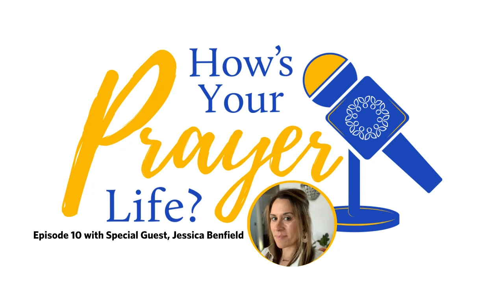

The Joyful Mysteries
With Father Patrick Peyton, C.S.C.
Make room for a moment of prayer. Follow Father Peyton through the Joyful Mysteries, with scenes from the life of Jesus and Mary.
With Father Patrick Peyton, C.S.C.
Make room for a moment of prayer. Follow Father Peyton through the Joyful Mysteries, with scenes from the life of Jesus and Mary.

A reflection with Father Fulgens Katende, C.S.C.
A short reflection on welcoming Jesus’ love and making room for others at our table.

Through the Mysteries · Podcast
Explore reluctance toward the Rosary and discover a different way to understand Mary and this prayer.

With Father Patrick Peyton, C.S.C.
Pray through the Resurrection and the hope of new life, with Father Peyton and scenes from the Gospel.
46 videos and episodes
Family Rosary’s first four videos in YouTube’s Popular list. Views checked November 9, 2026.
16:262.66M YouTube views
16:232.39M YouTube views
 16:23
16:232.06M YouTube views

1.11M YouTube views
Short reflections to make room for prayer in an ordinary day.
6:20Watch · Video
Reflect on welcoming Jesus’ love and making room for others.
 5:13
5:13Watch · Video
Reflect on prayer for loved ones who have died.
Begin with the Sign of the Cross and follow the opening prayers.
 0:37
0:37Watch · Video
Begin the Rosary with the first video in Family Rosary’s instruction sequence.
 0:54
0:54Watch · Video
Learn the Sign of the Cross in Family Rosary’s instruction sequence.
 1:21
1:21Watch · Video
Follow the Our Father in Family Rosary’s instruction sequence.
Recorded Rosary and Mass from November 4, 2026. For today’s broadcast, visit our live channel.
 35:10
35:10Watch · Video
Watch the recorded November 4 Mass from Family Rosary.
 18:57
18:57Watch · Video
Pray with the recorded November 4 Rosary from Family Rosary.
Conversations to bring prayer closer to everyday life.
Listen · Podcast
Explore reluctance toward the Rosary and discover a different way to understand Mary and this prayer.
Listen · Podcast
Explore the Hail Mary, grace, and Mary’s place in everyday prayer.
Listen · Podcast
Consider outdoor prayer and ways the Rosary can support family relationships.
Listen · Podcast
Connect Rosary mysteries with everyday family life and hear a personal Rosary story.
Listen · Podcast
Begin exploring the Rosary’s place in faith and family life.
Listen · Podcast
Explore silence, penance, hope, and prayer as Advent approaches.
Listen · Podcast
A Thanksgiving episode of Through the Mysteries, connecting the season with prayer.
Listen · Podcast
Reflect on charity through the Rosary and everyday faith.
Listen · Podcast
Reflect on how Rosary stories encourage prayer and faith.
Listen · Podcast
Explore Rosary origins, October devotion, and ways to live the mysteries.
Listen · Podcast
Find encouragement for praying the Rosary through difficult seasons.
Listen · Podcast
Reflect on heaven and the Rosary’s place in everyday life.
Listen · Podcast
Explore shared faith and the journey toward heaven.
Listen · Podcast
Reflect on finding hope through simple acts and prayer.
Listen · Podcast
Explore hope, small acts of goodness, and the prayers of the Rosary.
Listen · Podcast
Discuss vocation and how families can encourage the call to religious life.
Listen · Podcast
Explore prayer for vocations through the Rosary.
Listen · Podcast
Explore vocation and discernment in family and faith.
Listen · Podcast
Reflect on Mary as a guide in prayer and faith.
Listen · Podcast
Explore listening in prayer and the Rosary.
Listen · Podcast
Connect Christian hope with the Creed and prayer.
Listen · Podcast
Explore Father Peyton’s Prayer Guild and his call to a world at prayer.
Listen · Podcast
Learn about Father Peyton’s cause for sainthood and praying the Rosary.
Conversations to bring prayer closer to everyday life.

Listen · Podcast
A conversation about surrender, gratitude, and bringing everyday struggles to prayer.

Listen · Podcast
Family traditions and small daily routines help keep prayer part of home life.

Listen · Podcast
Explore how prayer routines can adapt when ordinary life changes.

Listen · Podcast
Explore the Rosary, journaling, and Eucharistic Adoration as practical prayer habits.
Listen · Podcast
Allison Gingras speaks with Allison Auth about prayer in everyday life.
Listen · Podcast
Allison Gingras speaks with Kylie Hein about prayer in everyday life.

Listen · Podcast
Allison Gingras speaks with Krystal Quagliera about prayer in everyday life.

Listen · Podcast
Allison Gingras speaks with Deacon Pedro about prayer in everyday life.

Listen · Podcast
Allison Gingras speaks with Danielle Schmitz about prayer in everyday life.

Listen · Podcast
Allison Gingras speaks with Nicole Benjamin about prayer in everyday life.

Listen · Podcast
Allison Gingras speaks with Bernadette Nelson about prayer in everyday life.

Listen · Podcast
Allison Gingras speaks with Maria Gallagher about prayer in everyday life.
Try a shorter search, or choose All to see every format.
Find more recordings and newly published prayer on the ministry’s original channels.